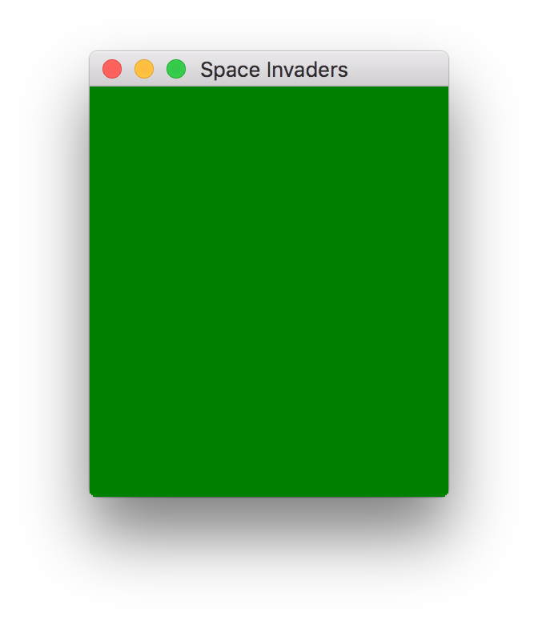
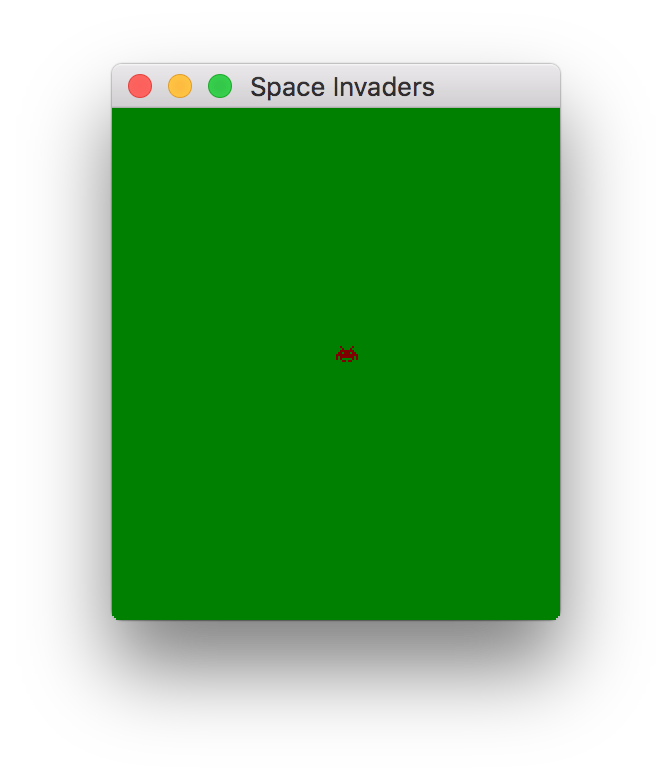

Space Invaders from Scratch - Part 2
In this series of posts, I am going to create a clone of the classic arcade game, space invaders, in C++ using only a few dependencies. In this post I will set up the required OpenGL shaders to draw an alien sprite!
The complete code of this post can be found here.
CPU-Based Rendering
The GPU is good at performing operations on lots of data. The trade-off being that programming the GPU is not as easy as programming the CPU. For the simple space-invaders clone I'm building here, it's easier to just render everything on the CPU using a buffer, i.e. a chunk of memory representing the pixels on the game screen. The buffer can then be passed to the GPU as a texture, and drawn to the computer screen.
struct Buffer { size_t width, height; uint32_t* data; };
The Buffer has a certain width and height. We represent each pixel as a uint32_t, this allows us to store 4 8-bit color values for each pixel. Here, we will only use 24 bits, representing the red, green, and blue channels. Although one might argue it would have been better to use a uint8_t, I use a 32-bit value because it makes indexing easier. For the integer types, we also need to include the following standard header,
#include <cstdint>
To help us define colors as uint32_t values, we define the following function,
uint32_t rgb_to_uint32(uint8_t r, uint8_t g, uint8_t b) { return (r << 24) | (g << 16) | (b << 8) | 255; }
which sets the left-most 24 bits to the r, g, and b values respectively. The 8 right-most bits are set to 255, although I mentioned earlier, the alpha channel is not used. If you would like to learn more, you can read this tutorial. We then create a function to clear the buffer to a certain color,
void buffer_clear(Buffer* buffer, uint32_t color) { for(size_t i = 0; i < buffer->width * buffer->height; ++i) { buffer->data[i] = color; } }
The function iterates over all the pixels and sets each of the pixels to the given color.
In the main function, we now initialize the buffer,
uint32_t clear_color = rgb_to_uint32(0, 128, 0); Buffer buffer; buffer.width = buffer_width; buffer.height = buffer_height; buffer.data = new uint32_t[buffer.width * buffer.height]; buffer_clear(&buffer, clear_color);
This will create a buffer of buffer_width width, and buffer_height height, and will set the color to the clear_color, i.e. green.
OpenGL Shaders
Having created the buffer, we now need to setup OpenGL to be able to display the buffer on screen. In Modern OpenGL, most responsibilities have been transferred from the OpenGL driver to the user who has to write programs that are executed by the GPU. These programs are called shaders. Furthermore, OpenGL defines a rendering pipeline, and shaders can execute at different stages of the pipeline. Legacy OpenGL is also called "fixed pipeline" because the stages of the pipeline are not programmable, but fixed. The two most important type of shaders are the Vertex and Fragment shaders. Vertex shaders handle the processing of vertex data. Most commonly, they are used to transform objects to screen-space coordinates. After several stages, the primitives that were processed by the Vertex shader, are rasterized. At this stage, the fragment shader processes the fragments generated by rasterization. Fragment shaders can output a depth value, a possible stencil value, and color values. Vertex shaders and Fragment shaders are the only shaders that are required by the rendering pipeline to function. Although you can make beautiful things with shaders, here we will build a pair of simple shaders that will output the contents of the buffer we created in the previous section.
For the vertex shader, we want to generate a quad that covers the screen. There is a trick, though, that allows us to instead generate a fullscreen triangle, without passing any vertex data to the shader. You can read more about this trick in this post. Here I just display the code I use in my program,
const char* vertex_shader = "\n" "#version 330\n" "\n" "noperspective out vec2 TexCoord;\n" "\n" "void main(void){\n" "\n" " TexCoord.x = (gl_VertexID == 2)? 2.0: 0.0;\n" " TexCoord.y = (gl_VertexID == 1)? 2.0: 0.0;\n" " \n" " gl_Position = vec4(2.0 * TexCoord - 1.0, 0.0, 1.0);\n" "}\n";
For the fragment shader, we just need to sample the buffer texture and output the result of the sampling,
const char* fragment_shader = "\n" "#version 330\n" "\n" "uniform sampler2D buffer;\n" "noperspective in vec2 TexCoord;\n" "\n" "out vec3 outColor;\n" "\n" "void main(void){\n" " outColor = texture(buffer, TexCoord).rgb;\n" "}\n";
Note how the output of the vertex shader, TexCoord, is now an input to the fragment shader. Although the vertex shader doesn't need any vertex data passed to it, we still need to tell it we're going to draw three vertices. For this, we create a vertex array object (VAO),
GLuint fullscreen_triangle_vao; glGenVertexArrays(1, &fullscreen_triangle_vao); glBindVertexArray(fullscreen_triangle_vao);
Roughly, VAOs are a kind of structure in OpenGL, that stores the format of the vertex data along with the vertex data.
Finally, the two shaders need to be compiled into code the GPU can understand and linked into a shader program.
GLuint shader_id = glCreateProgram(); //Create vertex shader { GLuint shader_vp = glCreateShader(GL_VERTEX_SHADER); glShaderSource(shader_vp, 1, &vertex_shader, 0); glCompileShader(shader_vp); validate_shader(shader_vp, vertex_shader); glAttachShader(shader_id, shader_vp); glDeleteShader(shader_vp); } //Create fragment shader { GLuint shader_fp = glCreateShader(GL_FRAGMENT_SHADER); glShaderSource(shader_fp, 1, &fragment_shader, 0); glCompileShader(shader_fp); validate_shader(shader_fp, fragment_shader); glAttachShader(shader_id, shader_fp); glDeleteShader(shader_fp); } glLinkProgram(shader_id); if(!validate_program(shader_id)) { fprintf(stderr, "Error while validating shader.\n"); glfwTerminate(); glDeleteVertexArrays(1, &fullscreen_triangle_vao); delete[] buffer.data; return -1; }
In the above code block, a shader program is first created using glCreateProgram. Individual shaders are created with the function glCreateShader, and compiled using glCompileShader. After they are attached to the program with glAttachShader, they can be deleted. The program is linked using glLinkProgram. OpenGL outputs various information during the compilation process, like e.g. a C++ compiler, but we need to intercept this information. For this I created two simple functions, validate_shader and validate_program,
void validate_shader(GLuint shader, const char* file = 0) { static const unsigned int BUFFER_SIZE = 512; char buffer[BUFFER_SIZE]; GLsizei length = 0; glGetShaderInfoLog(shader, BUFFER_SIZE, &length, buffer); if(length > 0) { printf("Shader %d(%s) compile error: %s\n", shader, (file ? file: ""), buffer); } } bool validate_program(GLuint program) { static const GLsizei BUFFER_SIZE = 512; GLchar buffer[BUFFER_SIZE]; GLsizei length = 0; glGetProgramInfoLog(program, BUFFER_SIZE, &length, buffer); if(length > 0) { printf("Program %d link error: %s\n", program, buffer); return false; } return true; }
Buffer Texture
To transfer image data to the GPU, we use an OpenGL texture. As in the case of the VAO, a texture is also an object which along with the image data, holds information about the formatting of the data. We first generate a texture using the glGenTextures function,
GLuint buffer_texture; glGenTextures(1, &buffer_texture);
and specify the image format and some standard parameters about the behavior of the sampling of the texture,
glBindTexture(GL_TEXTURE_2D, buffer_texture); glTexImage2D( GL_TEXTURE_2D, 0, GL_RGB8, buffer.width, buffer.height, 0, GL_RGBA, GL_UNSIGNED_INT_8_8_8_8, buffer.data ); glTexParameteri(GL_TEXTURE_2D, GL_TEXTURE_MIN_FILTER, GL_NEAREST); glTexParameteri(GL_TEXTURE_2D, GL_TEXTURE_MAG_FILTER, GL_NEAREST); glTexParameteri(GL_TEXTURE_2D, GL_TEXTURE_WRAP_S, GL_CLAMP_TO_EDGE); glTexParameteri(GL_TEXTURE_2D, GL_TEXTURE_WRAP_T, GL_CLAMP_TO_EDGE);
Here, we specify that the image should use an 8-bit rgb format to represent the texture internally. The last three parameters of the call to glTexImage2D specify the pixel format of the data we pass to the texture; each pixel is in the rgba format and is represented as 4 unsigned 8-bit integers. The two first glTexParameteri calls tell the GPU to not apply any filtering (smoothing) when reading pixels. The last two calls tell it that if it tries to read beyond the texture bounds, it will use the value at the edges instead.
We now need to attach the texture to the uniform sampler2D variable in the fragment shader. OpenGL has a number of texture units to which a uniform can be attached. We get the location of the uniform in the shader (the uniform location can be seen as a kind of "pointer") using glGetUniformLocation, and set the uniform to texture unit '0' using glUniform1i,
GLint location = glGetUniformLocation(shader_id, "buffer"); glUniform1i(location, 0);
Buffer Display
We have finally set up everything that's needed to display the buffer on our screen. Just before the game loop, we disable depth testing and bind the vertex array we created previously,
glDisable(GL_DEPTH_TEST); glBindVertexArray(fullscreen_triangle_vao);
If we now call
glDrawArrays(GL_TRIANGLES, 0, 3);
the contents of the window that gets created should be green. 
Sprite Drawing
We already created a window and displayed some color on it in the last post. Ending this post with the same result would be a bit boring, so let's draw something.
I first define a simple sprite,
struct Sprite { size_t width, height; uint8_t* data; };
This is just a blob of heap-allocated data, along with the width and height of the sprite. The sprite is represented as a bitmap, i.e. each pixel is represented by a single bit, with 1 indicating that the sprite pixel is "on". We then create a function to draw the sprite in the buffer with a specified color,
void buffer_sprite_draw( Buffer* buffer, const Sprite& sprite, size_t x, size_t y, uint32_t color ){ for(size_t xi = 0; xi < sprite.width; ++xi) { for(size_t yi = 0; yi < sprite.height; ++yi) { size_t sy = sprite.height - 1 + y - yi; size_t sx = x + xi; if(sprite.data[yi * sprite.width + xi] && sy < buffer->height && sx < buffer->width) { buffer->data[sy * buffer->width + sx] = color; } } } }
The function just goes over the sprite pixels and draws the "on" pixels at the specified coordinates if they are within the buffer bounds. Alternatively, one could represent the sprite in the same way we defined the buffer, i.e. each pixel being a 32-bit rgba value, with the alpha value used for transparency/blending.
In the main function, we create an alien sprite,
Sprite alien_sprite; alien_sprite.width = 11; alien_sprite.height = 8; alien_sprite.data = new uint8_t[11 * 8] { 0,0,1,0,0,0,0,0,1,0,0, // ..@.....@.. 0,0,0,1,0,0,0,1,0,0,0, // ...@...@... 0,0,1,1,1,1,1,1,1,0,0, // ..@@@@@@@.. 0,1,1,0,1,1,1,0,1,1,0, // .@@.@@@.@@. 1,1,1,1,1,1,1,1,1,1,1, // @@@@@@@@@@@ 1,0,1,1,1,1,1,1,1,0,1, // @.@@@@@@@.@ 1,0,1,0,0,0,0,0,1,0,1, // @.@.....@.@ 0,0,0,1,1,0,1,1,0,0,0 // ...@@.@@... };
To draw a red sprite at position (112, 128), we call,
buffer_sprite_draw(&buffer, alien_sprite, 112, 128, rgb_to_uint32(128, 0, 0));
To prepare for the next steps, we clear the buffer and draw the sprite each frame of the game loop. To update the OpenGL texture, we call glTexSubImage2D
glTexSubImage2D( GL_TEXTURE_2D, 0, 0, 0, buffer.width, buffer.height, GL_RGBA, GL_UNSIGNED_INT_8_8_8_8, buffer.data );
If you compile and run the final code of this post, here, you should see a red texture in the middle of a green background. 
Conclusion
In this post, we set up some plumbing so that we could draw sprites on the CPU and display them on the window we created in the last post. In modern OpenGL this is quite some work, as we touched vertex buffer objects, shaders, and textures. Having set our drawing routines, we can now start focusing on more exciting things, such as programming the game logic.